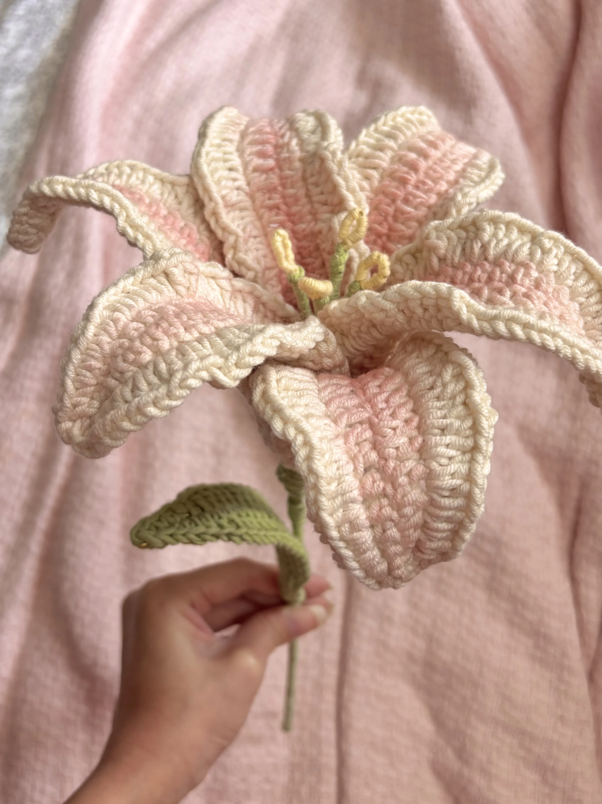

Free Crochet Pattern
Crochet Lily Pattern (step-by-step)
Want to crochet a lily that looks just like a real flower? This realistic crochet lily is perfect for home decor, handmade bouquets, or a thoughtful gift. You’ll find both the written pattern and a step-by-step video tutorial to help you make your own!
About the Pattern
This realistic crochet lily is such a fun project to make, and it takes around 4–5 hours to complete, depending on your crochet speed. You can follow the written pattern for all the crochet instructions and refer to my step-by-step YouTube video whenever you need a little extra help. The video will guide you through the assembly, including wire placement, shaping the petals, and arranging them to give your lily that realistic flower look.
Although this pattern is beginner-friendly, I wouldn’t recommend it as your very first crochet project. If you already know the basic crochet stitches and feel comfortable working with yarn and a hook, you can definitely give it a try! Just follow the instructions at your own pace, watch the video for the trickier steps, and enjoy bringing your crochet lily to life.
Video Tutorial
Prefer to crochet along with a video? Watch the full tutorial on YouTube.
The video is especially helpful for understanding how to position the wire inside the petals, shape them, and arrange the petals around the centre. You can keep it open while following the written instructions below.
Tip: If you’re new to crocheting flowers, watch the assembly section before you start. It’ll give you a better idea of how the individual pieces fit together.
Materials
- Weight 4 cotton acrylic yarn in your choice of petal colour
- Yellow yarn for the stamens
- Green yarn for the stem and leaf
- 4 mm crochet hook
- Stitch marker or bobby pin
- Scissors
- Yarn needle
- Wire
- Wooden stick
- Hot glue
- Optional: blush for shading the petals
Want to shop the materials?
Check out the materials here →A Few Helpful Tips Before You Start
- Choose your favourite petal colour: You can use any colour you like for your lily. Pick a shade that works well with the yellow stamens and green stem.
- Keep your tension relaxed: This helps you work comfortably into the foundation chain and shape the petals without making them too stiff.
- Use a stitch marker: Marking the first stitch makes it easier to identify where each round begins and ends.
- Keep your materials nearby: Since this project involves both crocheting and assembly, having your wire, wooden stick, yarn needle, and glue ready will make the process easier.
- Take your time with assembly: The way you position and arrange the petals makes a big difference to the final flower shape.
Abbreviations
Written Pattern
How to Crochet the Lily
The Petals
Make 6 petals.
The petals form the main part of your lily. You’ll crochet each petal individually and add wire along the edge to help you shape it.
Foundation
Foundation: Start with a slip knot and ch 25.
Keep your tension relaxed.
Tip: Avoid making the foundation chain too tight. You’ll need to work along both sides of the chain to create the petal shape.
Round 1
Turn the chain over and work into the back loops. Mark the first sc.
R1: 2sc, 2hdc, 14dc, 3hdc, 2sc, 3sc in last ch. Turn and work along the opposite side: 2sc, 3hdc, 14dc, 2hdc, 2sc. Sl st into the first marked sc.
You should now have an elongated petal shape with stitches worked along both sides of the foundation chain.
Tip: Keep your stitch marker in place until you finish the round. It’ll help you find the beginning when you need to join the stitches.
Round 2 — Adding the Wire
Place the wire along the edge of the petal and crochet over it as you work.
R2: Sc inc, 2hdc, 2dc, 11dc inc, 4hdc inc, 3sc inc.
Tip: Keep the wire positioned along the edge as you crochet. Work carefully so it stays covered by the stitches rather than poking through.
Continue along the opposite side: 3sc inc, 4hdc inc, 11dc inc, 2dc, 4hdc, sc inc. Sl st into the first stitch and secure the loop over the wire.
Refer to the video tutorial if you’re unsure how to position the wire or work the stitches around it.
Optional Petal Shading
Want to add a little extra detail? Apply a small amount of blush to the centre of each petal for a soft touch of colour. This step is completely optional, so feel free to leave your petals as they are.
Tip: Start with a small amount of blush and gradually build up the colour.
Repeat the pattern until you have all six petals ready.
The Stamens
Make 4 stamens.
The yellow stamens sit in the centre of the lily and help give the flower its finished look.
- Take a piece of wire and wrap yellow yarn around the top.
- Curve the end and twist it to secure the stamen.
- Cover the twisted part of each stamen wire with green yarn.
Repeat these steps until you have four stamens.
Tip: Keep the four stamens together once they’re finished so they’re ready to bundle during assembly. Be careful when handling the wire, especially around the ends.
The Leaf
Make 1 leaf.
The leaf uses the same basic stitch sequence as the petal base, but you’ll work only through Round 1. Adding wire from the beginning helps you shape the leaf and gives it structure.
Foundation
Foundation: Start with a slip knot and ch 25.
Keep your tension relaxed so you can work comfortably into the chain.
Round 1
Place the wire along the foundation chain. As you crochet, work over the wire to secure it along the edge of the leaf.
Turn the chain over and work into the back loops. Mark the first sc.
R1: 2sc, 2hdc, 14dc, 3hdc, 2sc, 3sc in last ch. Turn and work along the opposite side: 2sc, 3hdc, 14dc, 2hdc, 2sc. Sl st into the first marked sc.
Finishing the Leaf
Once you’ve completed Round 1, sl st into the first marked sc to close the round. Secure your yarn and weave in the end using a yarn needle.
Gently bend the wire to shape the leaf. You can curve the sides slightly and adjust the tip until you’re happy with the shape.
Your leaf is ready! Once attached, it adds a lovely finishing touch to your crochet lily.
Assembly
Now it’s time to bring all your pieces together!
Step 1: Bundle the Stamens
Bundle the four yellow stamens together and secure them with yarn. Make sure they’re grouped together before attaching them to the stem.
Step 2: Attach the Main Stem
Use hot glue to attach the stamen bundle to a wooden stick. Wrap green yarn around the stick to secure the bundle and cover the attachment point.
Step 3: Arrange the Petals
Arrange the six petals around the centre, securing them one by one with hot glue. Take your time with this step. Gently adjust the wired edges to shape the petals and create the look you want.
Tip: Check the flower from different angles as you attach the petals. This makes it easier to see whether they’re sitting evenly around the centre.
If you’re unsure about the placement, refer to the YouTube video to see how the petals are arranged.
Step 4: Wrap the Stem
Wrap the flower base and the wooden stick with green yarn to cover any visible inconsistencies. Keep the wrapping neat and consistent as you work down the stem.
Step 5: Attach the Leaf
Position the leaf against the stem and attach it as you wrap the yarn down the stick. Continue wrapping to secure the leaf and cover the attachment points.
Tip: Before finishing, check that the leaf sits comfortably against the stem and that the flower looks balanced.
Your Crochet Lily Is Ready!
And that’s it! Your realistic crochet lily is complete. You can display it in a vase, make a few more to create your own crochet bouquet, or gift one to someone special. Try experimenting with different petal colours to make flowers that suit your style.
I hope you enjoyed making this project! If you make a lily using this pattern, I’d love to hear how it turned out.
Happy crocheting!
A Little Note from Stitchy Days ♡
Hi there!
Thank you so much for trying one of my crochet patterns! I’m so happy to have you here, and I hope you enjoy making this project as much as I enjoyed creating it.
If you make something using this pattern, I’d love to see it! Feel free to tag Stitchy Days when you share your finished project. Seeing your creations means so much to me as I continue growing this little crochet corner.
Thank you for supporting my work and happy crocheting! ♡

Frequently Asked Questions (FAQs)
Can I make this crochet lily without craft wire?
Yes, you can make the lily without wire if you don’t have any on hand. However, the wire helps the petals hold their shape, so you can gently curve and adjust them to create a more realistic look. Without wire, the petals will be softer and may droop rather than hold their shape.
What size and gauge of wire should I use?
Thin, flexible craft wire or floral wire around 22–24 gauge works well for this project. It’s easy to bend when shaping the petals but sturdy enough to help them hold their curves. Make sure the wire is thin enough to crochet over comfortably without splitting the yarn. You can also refer to my video tutorial to see how I position the wire along the petal edges.
Do I need special dual-coloured yarn to get the pink gradient?
No, you don’t need special dual-coloured yarn! You can use regular yarn in a solid colour, such as white, to crochet the petals. The soft pink gradient is created by gently brushing a little makeup blush onto the petals, adding colour and shading for a more realistic finish. This step is completely optional, so you can leave your petals as they are or experiment with different shades to get the look you like.